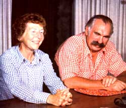
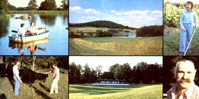

How does a middle-aged couple from The Big City pull up stakes, move to the country, oversee the construction of their own very efficient solar-heated house, rebuild a completely run-down farm . . . and then successfully establish themselves in the "all natural" beef business?
Quite gracefully, if that couple happens to be Ellie and Don Pruess . . . owners and operators of the Teel Mountain organic beef farm outside Stanardsville, Virginia. And if that name sounds familiar, it's only because you've seen Teel Mountain's "Veal and baby beef, milk-fed, raised naturally at mothers' sides, no hormones, insecticides, or antibiotics used. Tender, delicious. Supply limited" ads running in such widely varied publications as Natural Food & Farming Magazine and The Wall Street Journal.
But just how do a couple of happy, fun-loving, down-to-earth folks take life into their own hands and build an organic farm from scratch? And how do they make it pay off . . . even when-as happened last fall-their fields are attacked by hordes of army worms? MOTHER staffer Bruce Woods recently visited Greene County, Virginia and spent a pleasant afternoon (an afternoon which ran on far into the night) talking to Don and Ellie Pruess. And that conversation turned up just the kind of answers that you'd probably expect . . . plus, perhaps, a few unexpected surprises too!
PLOWBOY: Don and Ellie, the things you're doing here-farming wholistically, living in a solar-heated house, controlling pests with environmentally sound methods-certainly aren't new ideas . . . as I'm sure you'd be the first to admit.
But your operation is unique, because you've taken a whole raft of what most folks tend to think of as "dream stuff", blended it all together, and turned it into a practical way of living and a profitable working farm. How did you do that? What brought you to Teel Mountain in the first place?
DON: Well, to start at the beginning, both Ellie and I are Oregonians. She was born in Portland and my family moved to Grants Pass shortly after my birth . . . I guess you could say I was raised there from "year one".
PLOWBOY: Did either or both of your families farm in the Northwest?
ELLIE: My people lived in town-I didn't know a thing about agriculture, really, until after Don and I were married-but my parents were very much "outdoor" types . . . we were constantly hiking, backpacking, mountain climbing, and such. And the way my mother always stressed nutrition and the necessity of eating healthful foods, I think, influenced the way I finally turned out.
DON: My folks had a farm but it wasn't a business, really. My father, you see, was an attorney and that's the way he made our living until the depression hit us . . . .
ELLIE: Then he had to take pigs and other bartered goods in exchange for the legal work he did.
DON: That's right. And those crops and livestock "fees"-and that farm-kept us going through the bad years. There was no money at all back then . . . I had that fact indelibly impressed on me and I know-firsthand-how bad that big depression was. I saw it. I lived through it. And that's one of the reasons we're living here, just the way we are, today. In fact it's probably the primary reason.
PLOWBOY: Well, if worst comes to worst and the whole economic system falls apart again, it'd be hard to imagine a better place to ride out the next few decades. Ellie, how did you get interested in wholistic farming?
ELLIE: That just kind of happened over a period of years. My first interest, you see, was art. I majored in the subject at the Pratt Institute in Brooklyn, and was later an assistant art director for Reader's Digest.
It wasn't until after Don and I were married that I even tried to raise a garden and, like everyone else at the time, I started off using chemicals for everything. That was during World War II soon after DDT had been developed-I think the military came up with it first-and everybody was very excited because here was something that was going to wipe out all the harmful bugs . . .
DON:. . . forever . . .
ELLIE:. . . and all the insects had to do was walk on this wonderful new miracle substance, and they'd be paralyzed!
Anyway, our Victory Garden-that's what they were called during the war-was on very poor soil. And the insects, of course, congregated there for regular feasts. It was disastrous. We must have set growth records for bean beetles! So we put DDT on the plants. But that only killed the insects, and our crops were no better than before.
I think it was then I began to suspect that something was lacking in the whole chemical approach to gardening and farming. I mean, why did the weeds alongside the road look so healthy and green and beautiful . . . when our garden looked so bad? It didn't take me long to realize that the land is the important thing. It isn't what you put on a crop that counts . . . it's the soil that the plant grows in that determines its health.
DON: And then Rachel Carson's classic book on the subject, Silent Spring, was published, and you read that.
ELLIE: Yes, I had already read Plowman's Folly by Edward Faulkner and then Rachel Carson's work was serialized in the New Yorker and it was a huge influence . . . it shocked me so. After that it was only a short step to Louis Bromfield's Malabar Farm and Sir Albert Howard's books . . . all landmarks, of course, in the wholistic agriculture movement. And then one thing just sort of led to another and, almost before I knew it, I had built up a small library of books on soil replenishment and organic farming.
Later-when we lived in Rye, New York in the early 1960's-we started our first organic garden. And I could see the results! For instance, I noticed that when I transplanted a tree it would be very much bothered by insects the first year. Then the bugs would become less of a problem the next. And during the third year, the tree would suffer only a normal amount of insect damage. This was because the tree had been put under stress by the transplanting . . . and a plant that's under stress is simply easier for bugs to attack.
PLOWBOY: Just as a person under stress is more vulnerable to disease.
ELLIE: Exactly. And I've since learned that stress in plants-as in people-can be caused by many different things: Transplanting, drought, too much water, excessive cold or heat, a shortage of trace minerals . . . all of these things. and others, can stress a plant and make it more susceptible to insects or disease.
The reverse, of course, is also true. If you give your plants the best possible nutrition-the right amount of trace minerals and lots of organic matter-and protect them from extremes of heat or cold and encourage earthworms to live in the soil around them and so on . . . you'll have plants that are healthy and strong and that make better food for people to eat.
Well, the more I learned about this, to me, fascinating subject . . . the more I wanted to know. Consequently my library continued to grow and began to encompass nutrition as well as farming and gardening.
PLOWBOY: There's a big difference, though, between assembling a library and actually leaving the city to set up a commercial wholistic farm. What made you take such a step?
DON: You probably didn't know it but, years ago, Ellie and I started the chain of Bonanza steak houses. We put up the first pilot unit and then began to franchise restaurants all over the country. The operation grew very fast. We didn't serve organically grown beef then, of course, but we did handle only what we thought was good meat. I took care of the business end of things and Ellie designed the interiors of the restaurants and coordinated their construction.
ELLIE: It was a very creative time for us and a lot of fun. But we were living in Westchester then and-in 1968, when our property taxes suddenly jumped to $6,000 a year-we realized we had to leave.
DON: We were burglarized twice and the New York State Thruway was going up nearby. We felt crushed by civilization.
ELLIE: We had to get away. And so-since our daughter lived in Virginia and we'd visited her and loved the area-we decided that "Ol' Virginny" would be our new home. We searched for a long time, though, before we found what we were looking for. Even back then we knew that we wanted a solar-heated house, and we had to have just the right piece of land to build it on.
PLOWBOY: Where did you get that idea . . . about your house? Solar energy wasn't on many people's minds ten years ago.
ELLIE: Oh, there were a few folks-back in the early 60's, I think-who were writing and talking about the fact that the planet's cheap petroleum couldn't last forever. I can't remember just who they were now, or where their articles were published, but their work led me to think that my ideal-if I could do anything in the world that I wanted-would be to build a solar-heated house, back into the side of a hill, with an earth roof on it.
So, once we'd sold our business and decided to move down here, we made up a list of the features that our new home would have to have. We weren't thinking of a commercial farm at that time but we'd been hemmed in by developments for so long that we did want acreage . . . we wanted some land of our own around us. And-for our solar heating-we had to have a view to the south. And we wanted to look out over our own pond, which meant we had to have a site for a little lake somewhere south of our house's southern slope.
Naturally, we looked at any number of places that were wrong-with the view to the north and the pond site to the west and so forth-until the day we drove in here with an agent and everything seemed to fall together. There was even an abandoned house for us to live in while we built the home we wanted. We sold our city property and moved here for good in March of 1972.
DON: We really dove headlong into our new adventure too. And that's my advice to anyone who wants to do anything. Just do it. Don't try to blueprint your life because, if you do, the enormity of what you hope to attempt will probably seem so imposing that you'll never go through with it. Just go ahead. Get involved with what you really want to do! And then worry about solving the problems-one at a time-that you're bound to run into.
PLOWBOY: Did you know, at the time you moved here, that you were headed straight for a new career?
DON: No. We were in our late 40's, we had just sold a successful business, and we wanted to change our lifestyle while we still had enough vigor to do it. We just wanted to live here, breathe pure air, and rebuild the worn-out soil we'd purchased . . . rebuild it into a self-sufficient retirement farm.
Believe me, that was enough to think about in the beginning! When you looked over there-to the south-you could only see a horrible, red, washed-out gully. Nothing but corn-hyped up with chemical fertilizers-had been grown on that land for five years in a row. That's the way it is with much of the soil in Virginia today. The farmers pour on the chemicals, the real fertility of the land just keeps going down and down . . . and then the farmers take outside jobs to "get along" while their land is dying.
PLOWBOY: But not yours! Your farm is a picture of health today. How did you rebuild the washed-out gully that used to be over there . . . into the beautiful expanse of lush pasture that we're looking at now?
ELLIE: The first thing we did was grow green manure crops and disc them in. I'd learned from Plowman's Folly that not only is plowing not necessary . . . it isn't even good for the soil. What it does is fold organic residue-which should decay and return to the earth-so far under the surface that, in many cases, it can't decay. That's why a farmer's plow will sometimes turn up grass and hay-completely recognizable-that the same farmer plowed down six or seven years before.
Mother Nature never uses a plow. But she has blessed the top four inches of healthy soil with billions of micro-organisms that can transform any kind of decaying matter into new life. All we did was encourage this process . . . by growing green manure crops, treating them with biodynamic sprays, and chopping them up and discing them into the top four inches of our land.
And we didn't just do it once. We planted and disced again and again. And we planted and disced in clover too, to add nitrogen to the soil. And we added rock fertilizers-rock phosphate, greensand, and granite dusttoo. They all fed the bacteria and micro-organisms in the earth that break down and decay organic matter. And once you get that decomposition started, all sorts of really good things happen. The mycorrhizas-which are the fungi that grow in healthy soil-start to come back and thrive. And earthworms begin to move in and aerate the sod. And so on.
PLOWBOY: All you've done, then, is just cooperate a little with Mother Nature, help her set up a fit environment for her natural processes, and then stand back and let those processes take over and rebuild the land.
DON: Yes. And look at the results. This field we're gazing out across is our Exhibit Number One.
PLOWBOY: It's certainly beautiful. But, tell me: When you were discing under one crop after another . . . didn't you get any strange reactions from your neighbors?
DON: Oh, yeah. One came by while we were bush-hogging something down-either soybeans or clover-and he said, "What's the matter? Are you crazy? You're wrecking a whole crop!"
He wasn't the only one, of course. A lot of the neighbors couldn't understand what we were doing when we first started. But we didn't get up on a soapbox about our ideas or anything . . . because it's possible, you know, to shout so loud sometimes that no one hears you.
We just thought we'd let our results speak for themselves and then, maybe, people would "come to the party" one by one when they were ready. And that's starting to happen. One of those neighbors, for instance-a dyed-in-the-wool chemical farmer-used green manure for the first time this year. And he disced it under too.
PLOWBOY: You must have started designing and building your solarheated house while you were already spending most of your time rebuilding this farm.
ELLIE: Yes, but my brother-in-law-Nembard Culin, he's an architect-helped us immensely with the house. He's a marvelous person . . . ingenious and open to new ideas. He'd never designed a solar home before when we started on this one, but I talked to him about it and he just said, "Sure, we can do that." Everything really went very smoothly. Nembard had visions and ideas that Don and I hadn't thought of, yet his concepts always seemed to complement ours. He didn't have to compromise and neither did we.
PLOWBOY: How much of the actual construction did you contract out?
DON: We more or less set up our own little contracting company and did it all ourselves. I was the procurement officer: I got all of the materials and labor together. In the meantime Nem had the plans checked for stresses, Btu accumulation, and so on. Then he gave 'em to Ellie and said, "OK. Build it." Ellie oversaw the construction.
ELLIE: It's one of the few houses that was ever built over the telephone. It's true that I was the construction supervisor and that I had to, for instance, show the stonemasons-who couldn't read plans-what to do and where to put the concrete reinforcing wire and such.
But every time I'd start checking around with my tape measure and get to a point where I didn't know what the next step should be, I'd call up my brother-in-law and say, "Nem, I think I'm in trouble. Where do I go from here?" And he'd tell me over the phone and then I'd tell the men what to do. They never suspected that I didn't know.
DON: Remember, too, that those stonemasons-who are talented men with, perhaps, just a bit of prima donna about t hem-were taking orders from Ellie, a woman, and that's a little alien to the way things are usually done around here. In the beginning, they were always coming up to me and asking things like, "Don't you think I ought to do it this way or mix the mud like that?" And I'd just tell 'em to talk to Mrs. Pruess. Gradually they saw that Ellie knew what she was talking about-even if she does claim that Nem told her over the phone-and, at the end, they worshipped her.
ELLIE: Someone even offered me a job as a supervisor for a real construction company . . . but I told him that I could only do a project like this as a labor of love.
PLOWBOY: Well it's certainly an attractive house. But did you have any special problems getting your construction crew to understand the solarheating system you put in it?
DON: They didn't have to understand. That's why we didn't contract the work out. We simply broke the fabrication of the whole building down into a series of individual jobs and then walked each worker-one step at a time-through each little component of the larger project.
ELLIE: And we did that for twenty months.
PLOWBOY: Tell me about the solar-heating system. How-and how well-does it work?
ELLIE: It's sort of a hybrid passive/active system. The whole front-southwall of the building is windowed and the roof overhangs the glass enough to block out a good portion of the high summer sun's heat. During the colder months, though-when the sun is lower in the sky-that same overhang helps "funnel in" the solar radiation. This-plus the insulation provided by the house's sod roof, the hillside the building is nestled back into, and the concrete and urethane foam used in the dwelling's construction-make up the passive part of the system.
We've also built a solar collector-96 feet long by six feet high-in below our home's terrace. This heats sir, and the warmed air is then blown into a space-16 inches deep and honeycombed with cement blocks-under the floor of the house. Another series of fans can circulate that stored heat all through the building.
So far the system has worked wonderfully all three of the winters we've used it. The only sources of backup heat that we have are our fireplaces . . . and we've used them more for the pleasure of sitting in front of a fire than we have because we were cold.
PLOWBOY: All right. You moved south, began to recondition your land, and started the construction of a solar-heated house. That sounds like more than enough for any couple to handle. Where, along the way, did you decide to go into wholistic farming on a commercial basis?
ELLIE: That just sort of crept up on us. Healthy soil inevitably leads to healthy plants which, in turn, lead to healthy animals.
As our pastures rebuilt themselves, we just began to know that we could do a better job of raising beef than the chemical farmers were doing. And, in 1974, we started our herd.
DON: We hired a consultant-Jimmy Stork-who knew about configurations, ages, that sort of thing-to guide us when we went into cattle. And with his counsel we eventually narrowed our "breeds to consider" down to Hereford and Angus. Then, when we couldn't find any really rational reason to choose one over the other, we went with the Angus . . . because Ellie thought that black cows were more beautiful than red ones.
PLOWBOY: Do you have registered stock?
DON: Some of our cattle are registered, but not all. We don't really care about registration. We're more interested in configuration . . . how a cow is "blocked out", and whether we think she'll have large calves or small ones. We've picked the cream from as many different farms as we could find to pick over. And we're proud of the results. We've got a good, straight, commercial herd here.
ELLIE: We started with mature cows that had already calved, because we knew we were too inexperienced to handle calving problems. And we've been very pleased with our Angus cows. They're good mothers and exceptionally good milkers . . . which is extremely important to us since, basically, the only thing we have to sell is a "milk-fed" product.
PLOWBOY: What about your bull?
DON: Humphrey? He's a Brahman/Angus cross that we bought in 1974, while we were still building the herd. We chose him because some friends who breed these "Brangus"-as the cross is called-did a real sales job on us. They said that our herd would have "hybrid vigor" if we'd cross our Angus cows with something like Humphrey. And they were right. We couldn't be more pleased with the result. Our cows have had very few calving problems and the babies are strong and healthy, and develop fast.
PLOWBOY: Yes, I've been wondering about that "all natural" veal and baby beef you sell. What happens differently here-in the life of a baby calf-than would happen on today's average "chemical" cattle farm?
ELLIE: Things start happening differently here even before a calf is born. Most of today's farmers, for instance, breed their cows only during a two-or three-month season. All their calves are born together in a short period of time that way and it makes the management of the farm much easier.
We don't do it like that, though. We let our bull stay with the cows all the time-that's the way it's done in wild herds, you know-and our calves are born all year 'round. This makes more work for us-we have to keep track of our calves all the time and tag them so we know which baby goes with which mother-but it's one of the main reasons our meat is so much better than the meat which comes from an agribusiness feedlot.
Our calves are never weaned. They never have to go through the stress of weaning. Instead, each one stays right with its mother-milk-fed all its life-right up until the time it's processed.
DON: That's a critical point. The stress that Ellie's talking about-the stress of weaning-does make a difference in the meat. We know it does.
ELLIE: We don't worm our cows either. Most of the other farmers systematically give their cattle worm medications now . . . each cow is given regular shots and the worm-killer then circulates all through the animal's bloodstream. We don't do that.
And we don't have any "fly rubbers" on our farm the way so many other beef operations do. You've seen them: those machines that dispense insecticides whenever a cow rubs against 'em. We don't believe that a constant application of poison to an animal's face and back is a good thing.
We also keep our weeds under control by mowing and handpulling them . . . instead of spraying them with still other poisons the way most farmers do nowadays.
DON: We don't use any antibiotics either. That "peculiarity" of ours probably gets the strongest reaction of all from the others in the business. People ask us questions like, "You mean you just let an animal die, rather than give it a shot of penicillin?"
ELLIE: Yes, and that's such an irrelevant question! It's never happened. We've simply never had to make that decision.
We did have a cow with foot rot once. We had called the vet out to run a pregnancy test and, while he was here, we asked him what to do about another animal that was limping. He saw that she had foot rot and said, "Well, give her a shot." I told him that we don't give our cows any shots and asked him how folks had treated foot rot in the old days . . . before there were shots. He thought a minute and said, "Get some pine tar oil and put that on the cow's foot." We did, and the infection cleared up just fine. There are good, simple ways to take care of these little problems when they come up . . . instead of always trying to cure everything with a shot of some kind.
PLOWBOY: Do you feed your herd anything special in addition to this fantastic grass that you raise for them?
ELLIE: One of the things we do here that other farms don't do is feed our cows kelp. We offer it as a supplement and, when we first put it out, the herd sort of turned their noses up at it. But we waited and, after a day or so, we saw that the cattle had green-from the green kelp granules, which smell like seaweed-all over their noses. They eat a lot of it now.
PLOWBOY: When do you start offering kelp to your calves?
ELLIE: It's always in front of them, from the time they're born. I think that's one of the reasons our babies are extra healthy, vigorous, and disease-resistant. We even spray kelp on our fields! There's a powdered variety that dissolves in water and we spray it on our pastures right along with fish emulsion, which is a by-product of the tuna industry.
DON: We use Norwegian kelp that we buy from Zook and Ranck in Gap, Pennsylvania. It's expensive, but we feel that it's less contaminated. . with pollutants than the American brands. And we use a lot of it. Remember, though: The basic diet of our calves isn't pasture grass, or kelp, or anything else . . . except secondarily. Our calves' main diet is milk from the cows that bear them. That's why our meat is so tender. Beef from a grass-fed animal has a certain graininess to it . . . but ours doesn't. Our beef is very tender.
And here's another point that we think is terribly important: We do not implant hormones into any of our animals' bloodstreams . . . to feminize them and make them put on more weight with less feed. This has become standard practice in the beef industry and we think it's just a terrible, terrible thing.
Hormone implants are nothing but time bombs. The practice has been studied, you know, and those studies have revealed possible links with cancer. People who eat beef that has been artificially fattened with hormone implants seem to develop higher rates of cancer than people who do not. That's frightening! But do you know what's been done as a result of those studies? It's now mandatory that beef farmers sign a paper stating that they stopped implanting hormones in an animal fifteen days before it was slaughtered. Fifteen days! When they've been making implants in that same animal since its birth!
PLOWBOY: That's like locking the barn after the horse is stolen.
DON: Exactly. There has already been a frightening accumulation of the hormones in a beef's body by the time the practice is stopped just a few days before the animal is slaughtered. It's terrifying. That's one of the reasons we're in business in the first place . . . and one of the reasons that people purchase our meat. Ours doesn't have any implanted hormones in it.
PLOWBOY: Do you have to charge extra for your meat since you produce it in such an old-fashioned, "inefficient" way . . . without the help of artificial fatteners and so on?
DON: No, our prices run about the same as those you find in a gourmet meat market . . . and far less than those charged by the mail-order beef operations that sell ordinary chemically raised meat. Depending on the size of the order, our baby beef costs from $3.00 to $4.00 a pound . . . and that's net, net, net, usable weight.
PLOWBOY: Who buys Teel Mountain beef anyway? DON: Two types of people: The folks who want pure meat-without all of the poisons and hormone injections and so on that we've talked about-and the gourmets who demand a really fine product, directly from the farm. We've had customers in both categories mail blank checks to us, along with a letter saying something like, "Send us what you can and fill in the amount." That sort of trust is almost overwhelming.
ELLIE: We also get a good many buyers who are allergic to antibiotics, pesticide residues, and such.
DON: I would say, too, that a third to forty percent of our customers are doctors. Now you can interpret that in two ways: Either that they can afford it . . . which is fine, all well and good. Or that they know what's going on with supermarket beef and they want something better for their families . . . which isn't so fine.
PLOWBOY: There definitely are people "out there", then, who want their beef produced in a different and more natural way. But what about the agricultural "establishment"? Have any of the vested interests in the business acknowledged your existence?
DON: We've been extremely cooperative with the U.S. Department of Agriculture-with the U.S.D.A. inspectors at the plant where we have our processing done-and they've been quite laudatory about our meat. Those inspectors are very conscientious about their standards and they condemn a lot of liver from chemically raised cattle these days . . . but they've never condemned a liver from our farm.
ELLIE: One of the inspectors has even told Don that she can always tell the carcass from an organically raised cow or calf because its liver is so beautiful. It's the right color and it's never abscessed the way the livers from chemically raised cattle are.
PLOWBOY: You're starting to get through to the agribiz establishment, then.
ELLIE: Well, that's just on the local-very local-level with a few U.S.D.A. meat inspectors. It's a different story with the big chemical companies that make the pesticides and weed killers and so forth. Those people aren't interested in changing anything. They're perfectly happy with things the way they are.
Even the U.S.D.A--at least as far as our local county agricultural agent is concerned-so far has preferred to ignore us . . . even when we've had some real successes that could benefit other cattle farmers.
Probably the best example of that was last fall, when we were hit by a massive infestation of army worms that threatened to eat up our winter pasture. We were in a terrible fix. The summer had been unusually dry anyway and the drought had left our fields weak to begin with. Under those conditions, we knew that the worms could quickly finish off what little pasture we had left.
PLOWBOY: What did you do?
ELLIE: Well, first, we asked for advice from the agricultural extension agents and, as might be expected, all they told us to do was spray. We didn't even ask "with what" because we knew it'd just be some horrible chemical poison that, as even the agents admitted, the worms were already resistant to . . . but which we knew would wipe out many-if not all-of the natural predators on our land.
PLOWBOY: Predators that you had "cultivated" as part of your pasture's naturally balanced ecosystem.
DON: Yes. Spraying poisons on that grass would have been about the same as throwing acid on the land. It would have set our work back by years, and I wasn't about to see that happen. I was ready to hire people to come in and pick the worms off if we had to. But then Ellie found a better way.
ELLIE: I remembered reading somewhere that you can control insect pests by gathering up a bunch of whatever's bothering you, grinding them in a blender, and then spraying the groundup goop on the infested fields. I had also read-while looking through my library for help-about Bacillus thuringiensis . . . which is a bacterial substance that attacks only the Lepidoptera family. Well-since I knew that the army worms were actually caterpillars, or larvae, of Lepidoptera- I thought that the bacillus might work on them.
DON: So we went out to the fields end gathered about a half gallon of the worms. It was a very hot Sunday afternoon and we were kneeling down and picking the pests-just endlessly-like picking from a thick patch of berries . . . and there were so many of the army worms that it didn't take us long to collect a half gallon. Then, the next day, it took us most of the morning to find a place that handled the bacterial spray. And the only one we could locate was two and a half hours away. So we let the worms sit for a while and I drove up to Pennsylvania to buy the Bacillus thuringiensis. When I got back at about seven that evening, we finally took the worms-which were pretty gamy by that time-and blended them.
ELLIE: And that first twirl of the blender, believe me, was difficult. DON: Then we strained the liquid out and poured half of the foul\smelling substance into each of the two 360-gallon tanks of the bacillus on our sprayer. We used the tractor headlights to see what we were doing and worked until ten o'clock that night-Monday-putting the mixture on our fields.
PLOWBOY: How soon did you get results? If you're ready to invest as muchof yourself as necessary to changeyour life for the better...nothing can stop you.
ELLIE: Well, we had to leave town on business from Tuesday to Thursday . . . and we spent all that time not knowing if we'd done any good or not. But when we returned on Thursday . . . we couldn't find more than a few sickly worms in a full hour of crawling around the pasture. The really exciting thing, however, was that we did find a great many other insects-spiders, crickets, ants, and so on-which, I'm sure, had helped eat up the caterpillars.
I'm reasonably certain that the bacillus killed most of the pests. But whatever was responsible, something in that combination of blended worms, Bacillus thuringiensis, and natural predators did the job. And did it without poisoning everything in the fields.
We thought that was pretty big news, of course . . . but when we: called up the local county agricultural agent, told him of our success, and asked if he'd like to come by and take a look, he said he was too busy.
PLOWBOY: That's incredible. You didn't just have an infestation of army worms here in Virginia last fall, you know. The worms were all over the Southeast. We had them just as bad, for instance, down in North Carolina. If the U.S.D.A. had gotten the word out about your success in controlling the pests, it could have been extremely helpful to thousands of farmers, ranchers, gardeners, and other people.
ELLIE: Yes, we know. That's why we asked the agent to come out and see for himself.
PLOWBOY: I'm afraid that if we wait for the government to do anything worthwhile in the field of natural pest control . . . well, we'll wait for a long, long time. What steps are you taking in the meantime to "get the word out"?
ELLIE: About a year ago, twelve of us formed an organization which we named the Virginia Association of Biological Farmers. There were just the twelve of us at that first meeting, but we'll be getting together for the second time this week . . . and we expect over a hundred people to attend.
DON: The Association's president is A.P. Thompson and he's a fine, terrific guy. A.P. owns the Golden Acre Orchards . . . some very fine orchards that produce apples, apple juice, and apple cider vinegar-all organically raised without any chemical sprays at all-on a commercially successful basis.
ELLIE: And apples, you know, are one of the most heavily sprayed of all the food crops. Other growers say they can't raise apples unless they spray them. Yet A.P. does it without spraying . . . and makes money at it too.
PLOWBOY: What about Teel Mountain? Is your operation making money yet?
DON: We would have gone into the black last year if it hadn't been for the drought and the worms. They knocked us out of the ball game last year. But this year we'll do it . . . we'll turn a profit. Measured against our investment in time, effort, and money-of course-it'll be a modest one . . . but we will make a profit.
PLOWBOY: Don and Ellie, you should be proud of yourselves. You've accomplished or are accomplishing everything you've worked for during the past ten years. You've moved yourselves from a crowded, polluted, noisy city . . . to a clean, healthful, quiet spot in the country. You've designed and built your own comfortable, beautiful, and efficient solarheated house. You've used a knowledge of wholistic farming practices to rebuild worn-out land and fight off an invasion of army worms that other farmers couldn't control with chemical pesticides. And you're now on the verge of selling your "all natural" baby beef on a commercially profitable basis. In short, you've already done what a great many of MOTHER's readers want to do. What would you like to tell those readers-what advice do you have to give them-that might help them duplicate your success?
ELLIE: You've got to be workaholics! You've got to be dedicated to your ideals and willing to put in whatever hours and efforts are necessary to turn them into reality. And you've got to be willing to try things . . . to take a chance and do whatever has to be done to put you nearer your goals.
DON: There's no question that you have to take a gamble from time to time. That's very important, especially when you're up against something new . . . a problem you've never faced before.
Take those army worms, for instance. When I drove up to Pennsylvania and back and spent $200 for that Bacillus thuringiensis . . . it could all have been for nothing. It cost us a lot to beat those worms and yet, right up until the battle was over, we didn't know if what we were doing was going to work or not. In that sort of situation you just have to plunge ahead . . . take a chance and keep plunging forward.
ELLIE: You need faith too. Deep down, I was sure our natural spray would do the job.
DON: Yes, faith. Lots of faith. You've always got to believe in what you're doing. Then-if you're willing to take a chance in what you believe in-it pretty much boils down to what Ellie said: just being a workaholic.
We were lucky when we moved here because we had just sold a good business and we had some money to work with. But don't overestimate the value of that nest egg. We still could have done what we did with, say, a smaller tractor or a secondhand tractor . . . instead of the one we bought.
The simple fact of the matter is that-no matter how much money you're able to put into your move to the country and a more natural way of life-you must always be ready to match that cash ten-to-one with effort and innovation. Our experience has shown us that that ratio is a constant one. For every dollar you invest, you must be ready to invest ten dollars' worth of your own body and mind.
If you're lazy and only willing to support your cash investment one-to-one with physical and mental labor, you don't stand a chance. But if you're ready to invest as much of yourself as necessary to change your life for the better-and if you have the spirit to make that change stick-nothing can stop you. Fortunately, there seem to be more and more people today willing to strike that bargain.
|
 |
 |
|